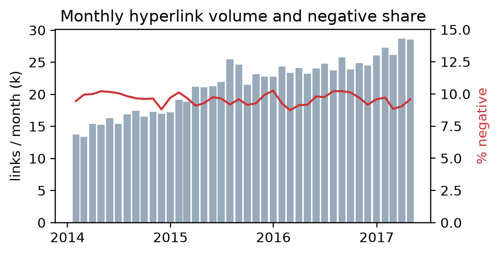
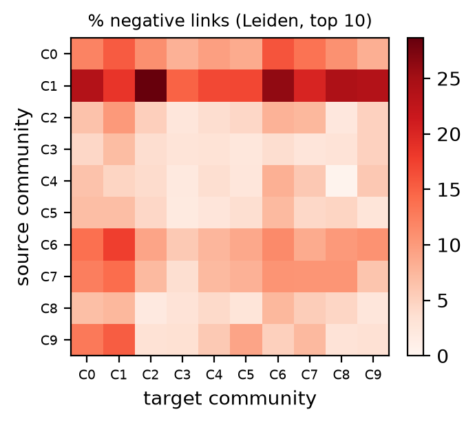

The project topic list was shared after the original proposal deadline, so, as Dr. Derr allowed, this document merges the proposal and the project update. We build on the seed idea Community Detection and Polarization (project type A) and add a link-prediction component. We study a signed, directed, time-stamped network of interactions between Reddit communities. Our questions are whether the communities we detect line up with conflict, who attacks whom, how conflict changes over time, and whether future hostile interactions can be predicted.
We use the public Stanford SNAP Reddit Hyperlink Network (Kumar et al., WWW 2018). A directed edge A→B means a post in subreddit A linked to a post in subreddit B. Each edge has a timestamp and a sentiment label: negative if the linking post is hostile or critical toward the target, positive otherwise. We merged the post-body and post-title files and removed self-links and duplicates. This leaves 858,488 links among 67,180 subreddits (Jan 2014 – Apr 2017), of which 9.58% are negative. For community detection and modeling we use a core graph of the 7,854 subreddits with ≥20 links. The core graph keeps 79% of all links.
| Subreddits | Links | Pairs | % neg. | Reciprocity | Neg. pairs answered negatively | Avg. clustering | |
|---|---|---|---|---|---|---|---|
| Full | 67,180 | 858,488 | 339,643 | 9.58 | 0.177 | 6.7% | — |
| Core (≥20 links) | 7,854 | 678,593 | 207,739 | 10.84 | 0.208 | 8.1% | 0.403 |


Conflict is concentrated in a few attackers and aimed at large targets. The 10 top negative senders are mostly "meta" communities that discuss other subreddits (r/subredditdrama, r/bestof, r/drama, r/circlebroke2, r/shitredditsays). r/subredditdrama alone sends 8,987 negative links, about 11% of all negative links. The most-targeted subreddits are large general ones (r/askreddit, r/worldnews, r/news, r/pics). Retaliation is rare: only 6.7% of attacked pairs are ever attacked back by the target.
RQ1: Negative links disproportionately cross community boundaries. Leiden finds 47 communities (modularity 0.498). Louvain gives similar results (43 communities, Q = 0.493). Table 2 shows that 62.3% of positive links stay inside a community, but only 53.1% of negative links do. That is far below the 61.3% expected if signs were randomly reassigned (null std 0.16 points). Equivalently, a link between communities is 40% more likely to be negative (13.1% vs. 9.4%). The hostility matrix (Fig. 2) shows one source of conflict: community C1 (r/subredditdrama, r/worldnews, r/news). Between 15% and 29% of its links to every other large community are negative, peaking at 28.6% toward the gaming community (C2: r/gaming, r/leagueoflegends, r/pcmasterrace).
| Leiden | Louvain | |
|---|---|---|
| Modularity Q | 0.498 | 0.493 |
| # communities (≥50 nodes) | 47 (25) | 43 (26) |
| % pos. links within comm. | 62.3 | 63.2 |
| % neg. links within comm. | 53.1 | 54.8 |
| sign-shuffle null (mean) | 61.3 | 62.3 |
| Neg. rate within / between | 9.4 / 13.1 | 9.5 / 13.0 |
| Method | Random neg. | Hard neg. |
|---|---|---|
| Common Neighbors | 0.947 | 0.558 |
| Jaccard | 0.863 | 0.507 |
| Adamic-Adar | 0.954 | 0.548 |
| Preferential Attachment | 0.929 | 0.566 |
| Attacker × Target activity | 0.877 | 0.634 |
| Logistic Regression (all) | 0.958 | 0.656 |
RQ4: Baseline link prediction. We train on the graph before Jul 2016 (labels: Jul–Sep 2016). We test on the graph before Oct 2016, with labels from Oct 2016 – Apr 2017: 5,537 new negative pairs among 7,641 active core subreddits. Each new negative pair is matched 1:1 with a non-link: a random pair ("random") or a pair that interacted only positively in the same window ("hard"). Classic heuristics easily tell interacting from non-interacting pairs (AUC ≈ 0.95). They are near chance at telling hostile from friendly interactions (AUC 0.51–0.57). A simple attacker × target activity score (0.634) and a logistic regression on all features (0.656) do better. The hard setting is therefore our main benchmark for the embedding and GNN models. Average precision follows the same pattern (0.959 random / 0.638 hard for logistic regression).
Code and results: github.com/Raaif-Yousuf/subreddit-conflict-networks
AI disclosure: AI was used for this assignment.